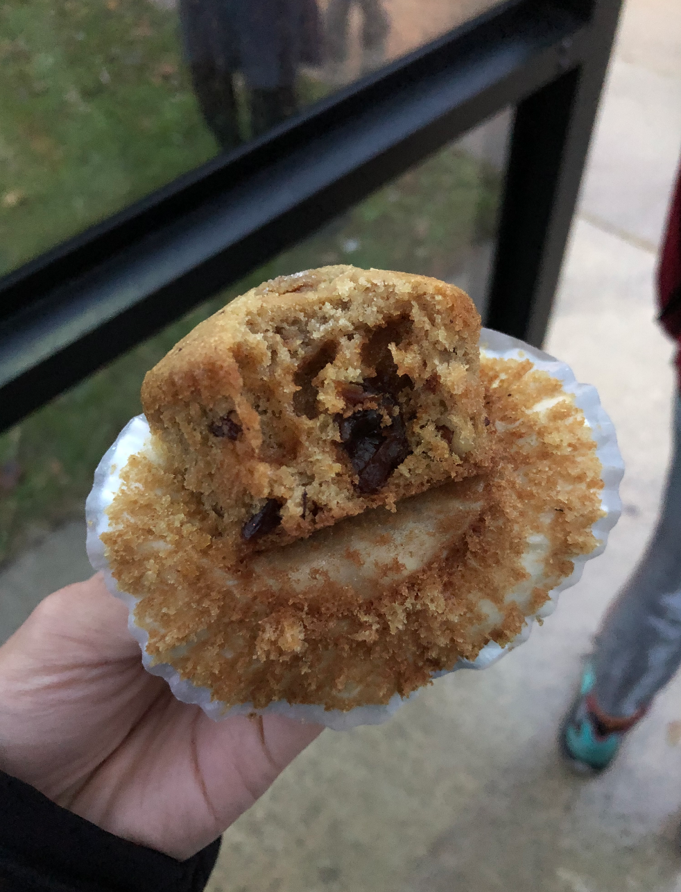

Desserts

Strawberry Macaron
Matcha Strawberry Mille Crepe Cake

Chocolate Lava Cake
Key Lime Pie

Marshmallow Chocolate Treat

Monkey Bread

Black Sesame Cookie

Honey Castella Cake
Chocolate Crinkle Cookie
Panna Cotta

Horchata

Baked Apple Chips

Sweet Tofu
Chocolate Chip Cookie
Apple Crisp
Sour Cream Pancake

Longan Cupcake